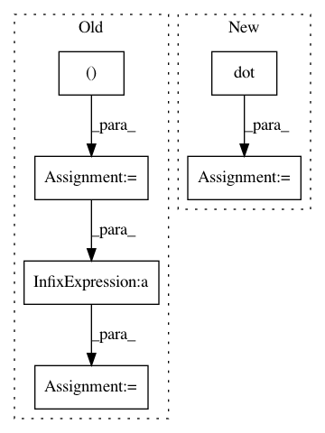

e4deccd98b73c918f582297050ecaf899e5387eb,ristretto/tests/test_lu.py,,test_rlu_float64,#,12
Before Change
m, k = 100, 10
A = np.array(np.random.randn(m, k), np.float64)
A = A.dot(A.T)
A = A[:,0:50]
P, L, U, Q = rlu(A, permute=False, k=k, p=5, q=2)
Ak = P.dot(L.dot(U)).dot(Q)
percent_error = 100 * np.linalg.norm(A - Ak) / np.linalg.norm(A)
assert percent_error < atol_float64
After Change
// ------------------------------------------------------------------------
// test wth permute == True
L, U = rlu(A, k, oversample=5, n_subspace=2, permute=True)
Ak = L.dot(U)
assert relative_error(A, Ak) < atol_float64
In pattern: SUPERPATTERN
Frequency: 3
Non-data size: 6
Instances
Project Name: erichson/ristretto
Commit Name: e4deccd98b73c918f582297050ecaf899e5387eb
Time: 2018-05-24
Author: jknox13@uw.edu
File Name: ristretto/tests/test_lu.py
Class Name:
Method Name: test_rlu_float64
Project Name: erichson/ristretto
Commit Name: e4deccd98b73c918f582297050ecaf899e5387eb
Time: 2018-05-24
Author: jknox13@uw.edu
File Name: ristretto/tests/test_lu.py
Class Name:
Method Name: test_rlu_complex128
Project Name: fabianp/mord
Commit Name: ee143e803c2fa352d1c42c95335773639267f190
Time: 2015-07-14
Author: f@bianp.net
File Name: mord/threshold_based.py
Class Name:
Method Name: grad_margin